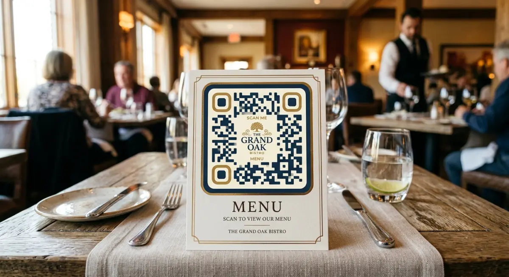

Create Custom QR Codes with Logo: Design & Scannability Guide
A custom QR code generator with logo is a digital tool that combines a brand icon, custom colors, or a call-to-action frame with a QR code. Error correction can help a code tolerate some damage, but it does not guarantee scanning; results depend on logo coverage, contrast, code size, print quality, and the scanner.
In today’s mobile-first digital landscape, bridge technology between physical touchpoints and online experiences is no longer optional—it is essential. Quick Response (QR) codes have evolved from simple black-and-white pixelated grids into powerful, visually branded marketing gateways. Whether you are running a retail campaign, managing event ticketing, or directing customers to a digital menu, utilizing a free custom QR code generator with logo can help maintain visual consistency. Privacy depends on the generator’s data handling and any other scripts loaded by the page.
Adding a brand logo, custom colors, or a call-to-action frame can make a QR code more recognizable. Any effect on scan or conversion rates depends on audience, placement, design, and context, so test branded designs with the intended users rather than assuming a universal percentage increase.
In this guide, we explore how custom QR codes work, compare static and dynamic codes, outline design best practices, and explain browser-side rendering using MatrixQR Studio.
Why Your Brand Needs a Custom QR Code Generator with Logo
When users encounter an unbranded, plain QR code in public, security concerns often arise. Cyber threats such as "QRishing" (QR code phishing) have made consumers cautious about scanning random codes. A customized QR code can support brand recognition, but a logo alone does not verify the destination or prove that a linked website is safe.
Key Benefits of Custom Branded QR Codes
- Enhanced Brand Recognition: Incorporating your official logo, brand colors, and iconography ensures that your offline marketing materials (brochures, packaging, banners) remain cohesive with your online brand identity.
- Clearer Calls to Action: Frames such as "Scan to View Menu" can explain what a QR code is for; their effect on engagement should be measured in the intended setting.
- Browser-Side Logo Processing: When logo composition runs locally in HTML5 Canvas, the image used for that step can stay in the browser instead of being uploaded to a QR-generation server. This does not by itself describe hosting logs, analytics, or the destination website's data practices.
- Brand Recognition: A familiar logo can support brand recognition, but it does not authenticate the QR destination or prove that the linked website is safe.
Static vs. Dynamic QR Codes: Which Should You Choose?
Before generating your code, it is critical to understand the technical difference between Static and Dynamic QR codes. Depending on your business goals, choosing the right type will impact your campaign's long-term flexibility and tracking capabilities.
| Feature | Static QR Codes | Dynamic QR Codes |
|---|---|---|
| URL Editability | Fixed after creation (no built-in expiry) | Fully Editable (Change target destination anytime) |
| Scan Analytics | No built-in QR-platform analytics; destination may log visits | Metrics vary by provider and configuration |
| Data Density & Size | Larger data creates denser, complex codes | Keeps code simple via a lightweight redirection URL |
| Best For | One-time links, personal Wi-Fi, privacy-first vCards | Marketing campaigns, digital menus, product packaging |
| Lifespan | No built-in expiry; destination may change or become unavailable | Flexible management via digital dashboard |
Dynamic QR codes may suit campaigns that need destination editing or provider analytics. Static QR codes can avoid a QR-platform redirect for direct URLs, but they do not guarantee complete privacy: the destination website and other page components may still process requests. Read our detailed Static vs. Dynamic QR code comparison guide for deeper insights.

Key Best Practices for Designing High-Converting QR Codes
While customizing your QR code with logos and colors is effective, maintaining scannability is paramount according to ISO/IEC 18004 QR Code standards. Follow these battle-tested design rules:
1. Maintain High Color Contrast
Camera sensors scan QR codes by detecting contrast between foreground modules and the background.
- Do: Use dark foreground colors on a light background (e.g., deep navy on crisp white).
- Don't: Avoid light foreground colors on a dark background, or subtle contrast pairs like yellow on white.
2. Safeguard the Quiet Zone
The "Quiet Zone" is the blank margin surrounding the QR code. Always keep a clear margin equal to at least 4 modules wide to prevent scanning delays.
3. Choose Optimal Logo Size and Error Correction (ECC)
When adding a logo, keep it small enough to preserve the QR code's finder patterns and data modules, and choose an error-correction level appropriate to the design. Level H can recover a larger proportion of damaged codewords than lower levels, but its nominal correction capacity is not a safe logo-area allowance and cannot ensure 100% scan accuracy. Test the exported code on multiple devices and at the intended print size.
Step-by-Step Guide: How to Create a Custom QR Code with Logo on MatrixQR
Creating a high-resolution QR code with MatrixQR can be done in a few steps. The QR rendering described here runs in the browser, and account requirements or available features should be confirmed in the current generator interface.
Detailed Workflow:
-
Select Your Data Field:
Navigate to MatrixQR Studio and choose your content type: URL, vCard, Wi-Fi, or Digital Menu link. -
Upload Your Brand Icon:
Load your transparent PNG or vector SVG logo, confirm the error-correction setting available in the generator, and test the resulting code. Logo composition is described as browser-side Canvas rendering; scan reliability still depends on the final design and output. -
Incorporate Scenario-Specific Features:
If building QR codes for food and hospitality, consult our step-by-step guide on adding logos to digital restaurant menus or read our technical whitepaper on client-side canvas image sanitization. -
Test and Export Vector Files:
Test the code on multiple smartphone camera apps under varying lighting conditions, then download vector SVG outputs suitable for physical print packaging.
Frequently Asked Questions (FAQ)
Will adding a logo make my QR code hard to scan?
A logo can make a QR code harder to scan if it obscures too much of the symbol or reduces contrast. Error correction helps recover some damaged codewords, but it does not mean that 30% of the visible area can safely be covered or guarantee a successful scan. Keep the logo modest and test the final code on multiple devices.
Can I track how many people scan my QR code?
Some dynamic QR services provide scan counts or other metrics, but available fields and privacy practices vary by provider. Review the specific service's documentation and disclosures before enabling analytics.
Are my logo and target links safe from server data leaks?
When the QR code and logo are processed locally in the browser, those inputs need not be uploaded to a QR-generation server for rendering. This does not guarantee that no other page requests are logged, and destination websites may process visits according to their own practices.
Start Creating Branded QR Codes Today
A customized QR code can align printed materials with your brand identity. Clear design and calls to action may help users understand the destination, but scanning and conversion outcomes depend on the audience, placement, and technical quality.
Ready to create a branded QR code? Use the MatrixQR Custom QR Code Generator with Logo to explore browser-side rendering and available export options. The blog page itself may load analytics; see the privacy policy for site-level details.